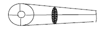
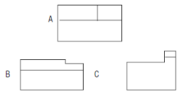
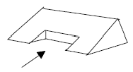
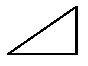
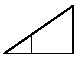
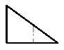
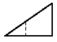

제강기능사 (2006-04-02 기출문제)
1과목: 임의 구분
1. 재결정 온도가 가장 낮은 금속은?
- Al
- Cu
- Ni
- Zn
(정답률: 59%)

2. 베어링 합금의 구비조건으로 틀린 것은?
- 충분한 점성과 취성을 가질 것
- 내마멸성이 좋을 것
- 열전도율이 크고 내식성이 좋을 것
- 주조성이 좋을 것
(정답률: 75%)
3. 다음 중 탄소(C)의 함유량(%)을 가장 많이 포함하고 있는 금속은?
- 암코(armco)철
- 전해철
- 카보니(carbony)철
- SM45C
(정답률: 63%)
4. 탄소강 중에 포함된 구리(cu)의 영향으로 틀린 것은?
- Ar1 변태점이 저하된다
- 강도, 경도, 탄성한도가 증가된다.
- 내식성이 저하된다.
- 압연시 균열의 원인이 된다.
(정답률: 65%)
5. 황동 합금 중에서 강도는 낮으나 전연성이 좋고 금색에 가까워 모조금이나 판 및 선에 사용되는 합금명은?
- 톰백(tombac)
- 7 - 3 황동 (cartrige brass)
- 6 - 4 황동 (muntz metal)
- 주석 황동 (tin brass)
(정답률: 72%)
6. 순금속과 합금에 대한 일반적인 공통 성질 중 맞는 것은?
- 열과 전기의 전도체이다.
- 전성 및 연성이 나쁘다.
- 상온에서 고체이며 비결정체이다.
- 빛에 대하여 투명체이다.
(정답률: 80%)
7. 에어러졸(aerosol) 형태의 침투 탐상 재료 보관시 유의점으로 틀린 것은?
- 직상광이 드는 곳에 둔다.
- 온도가 높은 곳은 피한다.
- 반드시 소화기를 비치한다.
- 화기가 있은 곳은 피한다.
(정답률: 91%)
8. 금속 표면에 스텔라이트(stellite, Co-Cr-W 합금), 초경합금 등의 금속을 용착시켜 표면 경화층을 만드는 방법은?
- 금속 용사법
- 하드 페이싱(hard facing)
- 쇼트 피닝(shot peening)
- 금속 침투법( metallic cementation)
(정답률: 64%)
9. Fe-C계 평형 상태도에서 α-Fe 이 γ-Fe으로 변하는 점은?
- A2 변태점
- A3 변태점
- A4변태점
- 공정점
(정답률: 67%)
10. 동합금 중 석출경화(시효경화) 현상이 가장 크게 나타나는 것은?
- 순동
- 황동
- 청동
- 베릴륨동
(정답률: 62%)
11. 공석강과 공정주철의 탄소함유량(%)은?
- 0.2%, 1.2%
- 0.4%, 2.0%
- 0.6%, 3.2%
- 0.8%, 4.3%
(정답률: 79%)
12. 항복점이 일어나지 않는 재료는 항복점 대신 무엇을 쓰는가?
- 비례한도
- 내력
- 탄성한도
- 인장강도
(정답률: 46%)
13. 면심입방 격자에 포함되어 있는 원자의 수은 몇 개인가?
- 1개
- 2개
- 3개
- AND
(정답률: 50%)
14. 금속을 경금속과 중금속으로 분류할 때, 비중은 약 얼마를 기준으로 하는가?
- 1.5
- 2.5
- 4.5
- 7.5
(정답률: 78%)
15. Al-Si 합금의 강도와 인성을 개선하기 위해 Na나 Sr.Sb 등을 첨가하여 공정 Si상을 미세화시키는 처리는?
- 고용화처리
- 시효처리
- 탈산처리
- 개량처리
(정답률: 66%)
16. 가상선을 사용하는 경우와 관계없는 것은?
- 물체의 뒷부분을 도시하는 경우
- 인접 부분을 참고로 표시하는 경우
- 가공 전후의 모양을 도시하는 경우
- 공구, 지그 등의 위치를 참고로 도시하는 경우
(정답률: 42%)
17. 물체의 높이를 알 수 없는 투상도는?
- 평면도
- 정면도
- 측면도
- 배면도
(정답률: 77%)
18. 다음 도면에서 해칭한 부분은?

- 물체의 두께
- 물체의 회전단면도
- 물체의 계단단면도
- 물체의 온단면도
(정답률: 77%)
19. 도면에서 가는실선으로 표시하지 않는 것은?
- 외형선
- 치수선
- 지시선
- 치수보조선
(정답률: 67%)
20. 치수 숫자와 같이 사용하는 기호 중 구(球)의 반지름을 표시하는 것은?
- R
- ø
- SR
- Sø
(정답률: 91%)
2과목: 임의 구분
21. 도형의 척도에 비례하지 않을 때 표시하는 방법의 설명으로 틀린 것은?
- 적절한 곳에 '비례척이 아님'이라고 기입한다.
- 도형의 일부 치수가 비례하지 않을 때는 치수 아래 직선을 긋는다.
- 척도란 또는 적절한 곳에 'NS'를 표시를 한다.
- 치수에 ( ) 표시를 한다.
(정답률: 60%)
22. SM20C 에서 20C 는 무엇을 나타내는가?
- 최고인장강도
- 최저인장강도
- 탄소함유량
- 기계구조용 탄소강
(정답률: 70%)
23. 정투상도법에서 눈→투상면→물체의 순으로 투상 할 경우는 제 몇 각법인가?
- 제 1 각법
- 제 2 각법
- 제 3 각법
- 제 4 각법
(정답률: 85%)
24. 리드가 9mm 인 3줄 나사의 피치는?
- 3mm
- 6mm
- 9mm
- 27mm
(정답률: 86%)
25. 투상도법에서 원근감을 나타낸 도법은?
- 정투상도
- 부등각 투상도
- 등각투상도
- 투시도
(정답률: 45%)
26. 다음 그림은 제 3각법에 의해 그린 투상도이다. 평면도는 어느 것인가?

- A
- B
- C
- A 와 B
(정답률: 81%)
27. 그림과 같은 겨냥도를 3각법으로 나타낼 때 우측면도는? (단, 화살표 방향이 정면도임)





(정답률: 71%)
28. 연속주조 개시 때 주형저부를 막아주며 주편을 핀치 롤 까지 인출시키는 장치는?
- 더미바
- 턴디시
- 주형
- 롤러 테이블
(정답률: 65%)
29. 전기로 산화정련작업에서 일어나는 화학반응식이 아닌 것은?
- Si + 2O → SiO2
- Mn + O → MnO
- 2P + 5O → P2O5
- O + 2H → H2O
(정답률: 65%)
30. 출강량이 300톤 이고 출강실수율이 95%라면 전장입량은 약 얼마인가?
- 306 ton
- 316 ton
- 326 ton
- 336 ton
(정답률: 56%)
31. LD 제강법은 산소가스를 전로의 어느 부분에서 취입하여 강을 제조하는가?
- 하면
- 상면
- 옆면
- 옆·하면
(정답률: 66%)
32. 다음의 부원료 중 전로 내화물의 용출을 억제하기 위하여 사용되는 부원료는?
- 생석회(CaO)
- 백운석(MgO)
- HBI
- 철광석(Fe2O3)
(정답률: 52%)
33. 용강을 고온, 고속으로 주입할 때 강괴표면에 나타나는 결함은?
- 수축관
- 편석
- 주름살이
- 균열
(정답률: 36%)
34. 전로 내 관찰시 안전사항으로 가장 관계가 먼 것은?
- 앞면 보호구를 착용한다.
- 전로 경동시 노구 정면에서 정확히 관찰한다.
- 로 경동을 여러번 한 후 정밀 점검한다.
- 슬래그 자연낙하 위험을 없앤 후 점검한다.
(정답률: 88%)
35. T자형 파이프 스티러(교반기)를 사용하여 용선을 교반시키는 탈황법은?
- 데마크-외스트베르크법
- 요동 레이들법
- 터뷸레이터법
- 라인슈탈법
(정답률: 65%)
36. 염기성 전로법에 해당하는 것은?
- 황(S)의 산화열을 이용한다.
- 탈인(P) 탈황(S)이 불가능하다.
- 저인(P) 저황(S)의 고품위 광석을 원료로 한다.
- 탈인(P)과 어느 정도의 탈황(S)을 할 수 있다.
(정답률: 73%)
37. 전로 제강법의 특징으로 가장 관계가 먼 것은?
- 열공급이 없이 용선 중의 불순성분의 산화열에 의해 정련하므로 원료 용선의 선택에 제한이 있다.
- 성분 조절이 다소 곤란하다.
- 설비 및 조업이 비교적 간단하여 경제성이 높다.
- 장입 주원료인 고철을 무제한으로 사용이 가능하다.
(정답률: 74%)
38. 다음 중 로외 정련법으로 옳지 않은 것은?
- AOD
- 조괴법
- 레이들 정련법
- 진공 탈가스법
(정답률: 40%)
39. 전로내에서 산소와 반응하여 가장 먼저 제거되는 것은?
- S
- P
- Si
- Mn
(정답률: 52%)
40. 다음 중 금속 화재의 종류는?
- A
- B
- C
- D
(정답률: 73%)
3과목: 임의 구분
41. 순산소 상취 전로법에 사용되는 밀 스케일(mill scale)또는 소결광의 사용 목적으로 옳지 않은 것은?
- 슬로핑 방지제(slopping) 방지제
- 냉각 효과의 기대
- 출강 실수율의 향상
- 산소 사용량의 절약
(정답률: 48%)
42. LD 전로용 용선 중 Si 함유량이 높았을 때의 현상과 관련이 없는 것은?
- 강재량이 많아진다.
- 고철 소비량이 줄어든다.
- 산소 소비량이 증가한다.
- 내화재의 침식이 심하다.
(정답률: 50%)
43. 개재물 혼입의 방지법이 아닌 것은?
- 내화재 개량
- 주형도료 사용
- 저속주입
- 주형 탕도의 청소
(정답률: 59%)
44. 취련 중에 로하 청소를 금하는 가장 큰 이유는?
- 감전사고가 우려되므로
- 질식사고가 우려되므로
- 실족사고가 우려되므로
- 화상재해가 우려되므로
(정답률: 83%)
45. 단위시간에 투입되는 전력량을 증가시켜 장입물의 용해?
- HP법
- RP법
- UHP법
- URP법
(정답률: 68%)
46. 산화광(Fe2O3, PbO, WO3)을 환원하여 금속을 얻고자 할 때 환원제로서 가장 거리가 먼 것은?
- 카본(C)
- 수소(H2)
- 일산화탄소(CO)
- 질소(N2)
(정답률: 61%)
47. 강괴의 비금속 개재물 생성 원인이 아닌 것은?
- Slag가 강재에 혼입
- 내화재가 침식하여 강재에 혼입
- 대기에 의한 산화
- 주형과 정반에 도포 실시
(정답률: 67%)
48. 주조 중 투입되는 파우더 역할로 옳지 않은 것은?
- 용강탕면 산화 방지
- 주편의 용강 유출 방지
- 강의 청정도 향상
- 용강탕면 열 발산 방지
(정답률: 40%)
49. 전기로에 사용되는 흑연전극의 구비조건으로 옳지 않은 것은?
- 고온에서 산화가 되지 않아야 한다.
- 강도가 높아야 한다.
- 전기 비저항이 작아야 한다.
- 전기전도율이 낮아야 한다.
(정답률: 50%)
50. 강괴의 결함 중 표면결함에 속하지 않는 것은?
- 탕주름
- 균열
- 편석
- 2중표피
(정답률: 45%)
51. 환원철을 전기로에 사용 할 때의 장점으로 옳은 것은?
- 제강시간이 길다.
- 생산성이 향상된다.
- 형상 품위 등이 일정하여 취급이 어렵다.
- 자동조업이 쉬운 장점이 있으나, 맥석분이 많으므로 석회가 필요하고 가격이 고철보다 비싸다.
(정답률: 70%)
52. 전로정련시 고철 장입에 의한 폭발 발생에 대하여 설명한 것으로 가장 올바른 것은?
- 캔고철은 폭발로부터 안정한 고철이지만 불순원소 상승때문에 사용이 제한된다.
- 고철 중 수분함량이 높은 경우 고온에서 급격한 수증기 발생으로 폭발이 가능하다.
- 산화철은 폭발 가능성이 거의 없기 때문에 폭발이 우려되는 경우 산화철 사용을 증가시킨다.
- 전로에서 HBI을 사용하는 경우 폭발을 방지하기 위해 가능한 한 슬래그로 코팅하는 것이 필요하다.
(정답률: 61%)
53. 조괴법에 비하여 연속 주조법의 장점이 아닌 것은?
- 강괴의 실수율이 높다.
- 생산성이 향상된다.
- 다품종 강종 생산이 가능하다.
- 열 손실이 적다.
(정답률: 60%)
54. 다음 강도율의 설명 중 맞는 것은?
- 연근로시간 100만 시간당 연노동손실일 수
- 연근로시간 1000 시간당 연노동손실일 수
- 연근로시간 100만 시간당 발생한 사상자 수
- 연근로시간 1000 시간당 발생한 사상자 수
(정답률: 54%)
55. 다음 RH 설비구성 중 주요설비가 아닌 것은?
- 주입장치
- 배기장치
- 진공조 지지장치
- 합금철 첨가장치
(정답률: 38%)
56. 제강의 주원료로 사용되지 않는 것은?
- 고철
- 선철
- 주강
- 코크스
(정답률: 77%)
57. 탈산제로 쓰이지 않는 물질은?
- Mn
- Cu
- Al
- Si
(정답률: 46%)
58. 유도로에 속하지 않는 것은?
- 저주파 전기로
- 고주파 전기로
- 직접 아아크로
- 중주파 전기로
(정답률: 54%)
59. 염기도를 바르게 나타낸 식은?
- CaO% / SiO2%
- SiO2% / CaO%
- SiO2% × CaO%
- SiO2 - CaO%
(정답률: 68%)
60. 연속 주조기의 설치 높이를 낮추기 위해 원호 모양의 구부러진 주형을 사용하는 연속 주조 형식은?
- 수직형
- 수직만곡형
- 전만곡형
- 수평형
(정답률: 47%)